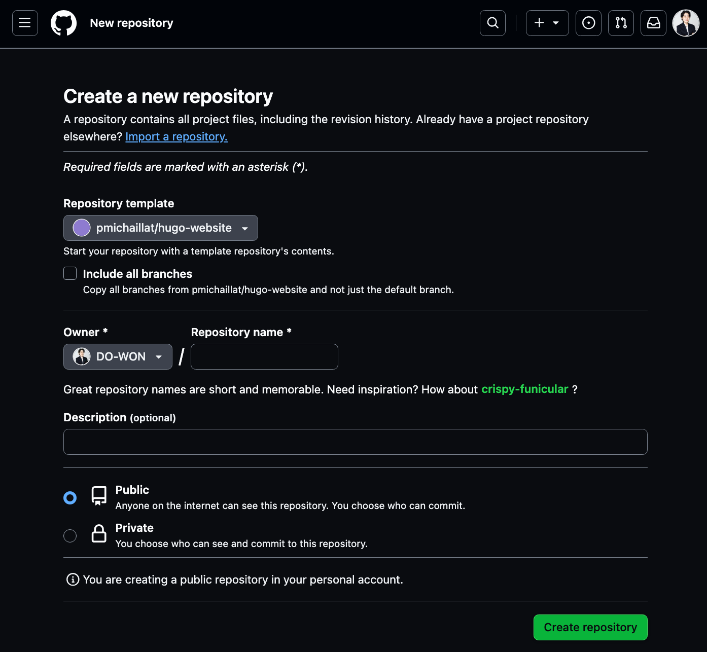
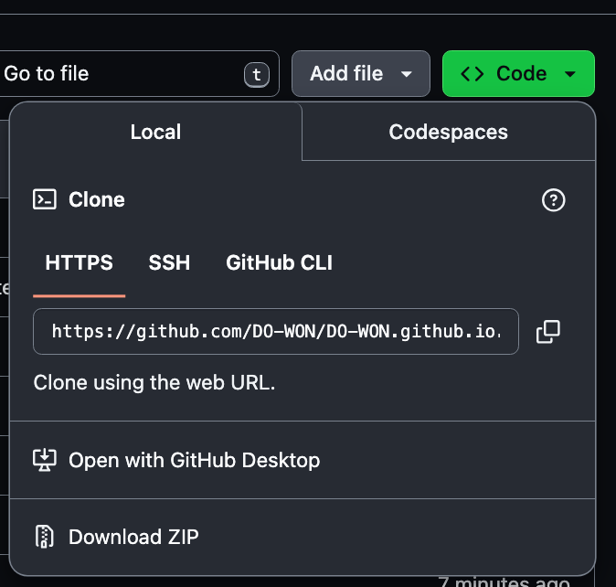
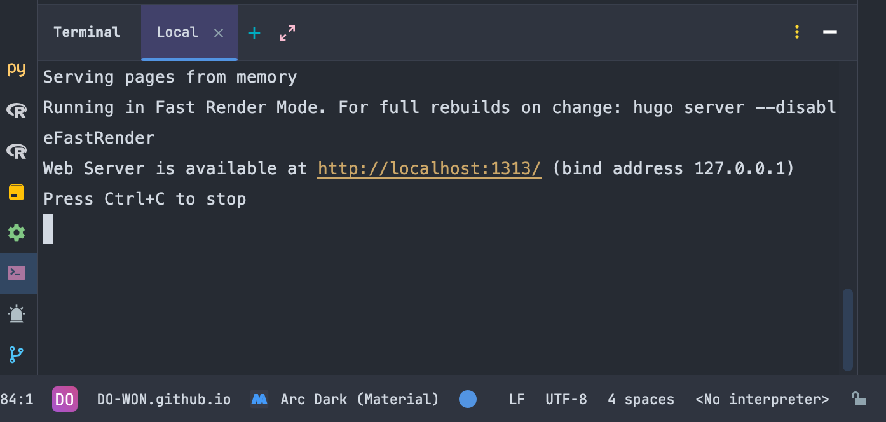

Making a GitHub Website for Academics
How to build an academic website
This is a step-by-step tutorial of how to build an academic website hosted on GitHub Pages (or step-by-step demonstrations of how I did it).
Step 0. Prerequisites
- You must have a GitHub account.
- Download GitHub Desktop on your local machine (laptop or desktop).
- You must have a template repository in mind. I used this one as my template. All credit to the amazing Pascal Michaillat!
Now, let's start building your website!
Step 1. Fork the template
First step is to fork the template repository.
How to fork?
- Go to the template repository
- Click the
Use this templatebutton (the green one!) on the top right - Then, click
Create a new repository
Now, you will see the following page:

- In the
Repository namesection, you must put in<your GitHub owner name>.github.io. For example, in my case, it'sDO-WON.github.io. - Then, click the green
Create repositorybutton below.
Step 2. Clone the forked repository to the local machine
It is good to work from your local machine and then commit and push changes to your GitHub repository.
- Go to the forked repository
- Click the green button on the top right
<> Code - You will see
Localas follows:

- Click
Open with GitHub Desktop - Choose a local path (on your laptop/desktop)
- Click the
Clonebutton in the bottom right
Step 3. Install Hugo
Install Hugo. If you use a Mac, you can install Hugo by running the following in your terminal:
brew install hugoStep 4. Setting up config.yml
Next step is to make changes on your local machine. The first thing you need to change is the config.yml file.
- Open the repository in your local IDE (e.g., VS Code, PyCharm, etc.)
- You can open it using GitHub Desktop (see this link)
- In your IDE, open the
config.ymlfile - Change the
baseURL. For me, I putdo-won.github.ioas thebaseURL. You should put your own GitHub username instead ofdo-won.
Step 5. Update your website!
Since you have made some changes on your local machine, now it's time to update your website.
Development stage
While you develop (make changes, test those changes, make further changes ...), you can check what the changes look like on your local environment. In the terminal of your IDE (wherever you are working), try running:
hugo server
Then, click http://localhost:1313/ to check how your website looks. This is very useful since it takes some time to compile, render, and deploy all the changes on GitHub. In the development stage, use Hugo to automatically reflect changes made locally and rebuild the website.
If you want to stop running the Hugo server, enter control+C in your terminal.
Compiling and deploying
After you've checked how the changes look with the Hugo server, and finished making all the changes you needed, you're ready to deploy those changes to your website.
First, run hugo in your IDE terminal, in your repository.
hugoThis command compiles everything needed to deploy the changes to your website.
Then, using your IDE or GitHub Desktop, commit and push changes to your online repository.
Wait until the deployment is completed and visit your website!
Next steps
Now that you know how things work, you can make further changes on your local machine and deploy them.
Please refer to this page for further customization!
Note: this post documents the site's earlier Hugo-based setup. The site now runs on a no-build, vanilla HTML/CSS/JS architecture maintained via Claude Code (see the cc-academic-website template) — the general GitHub Pages hosting steps above (Steps 0–2) still apply either way.